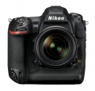
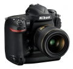
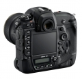

器材库 > 35mm画幅可换镜头数码相机 > D5

规格总览
产品类型
35mm画幅可换镜头数码相机
发布日期
2016-01-06
厂家推荐价格
6,497.00 （美元）
影像规格
影像传感器
CMOS
影像传感器尺寸
约35.9×23.9mm
总像素
约2133万
有效像素
约2082万
影像处理器
EXPEED 5
静态图像格式
JPEG, TIFF-RGB, NEF(RAW), NEF(RAW)+JPEG
静态图像尺寸
(L)5568 x 3712, (M)4176 x 2784, (S)2784 x 1856
短片格式
MOV
短片尺寸
3840 x 2160 (4K UHD)；30p （逐行），25p, 24p1920 x 1080；60p, 50p, 30p, 25p, 24p1920 x 1080裁切；60p, 50p, 30p, 25p, 24p1280 x 720；60p, 50p
除尘系统
清洁影像传感器、图像除尘参考数据（需要”捕影工匠“软件）
镜头和对焦
镜头卡口
Nikon F
兼容镜头
兼容AF 尼克尔镜头，包括G 型、E 型、D 型镜头（PC 镜头受到某些限制） 、DX 镜头（使用DX24×16 1.5× 影像区域）、AI-P 尼克尔镜头以及非CPU AI 镜头（仅限于曝光模式A 和M）。不能使用IX 尼克尔镜头、用于F3AF 的镜头以及非AI 镜头。
对焦点
153 个对焦点，其中55 或15 个对焦点可供选择
AF辅助灯/光
有
手动对焦
支持
曝光控制
测光系统
使用约180K （180000）像素RGB 感应器的TTL曝光测光
测光模式
中央重点测光, 点测光, 矩阵测光, 亮部重点测光
测光范围
-3EV~20EV
曝光模式
带有柔性程序的程序自动（P） 、快门优先自动（S）、光圈优先自动（A）和手动（M）
拍摄模式
S (单张拍摄), CL (低速连拍), CH (高速连拍), Q (安静快门释放), 自拍, MUP (反光板弹起)
快门类型
电子控制纵走式焦平面机械快门；电子前帘快门（适用于反光板弹起释放模式）
快门速度
1/8000-30 秒（以1/3、1/2 或1EV 为步长进行微调）、B 门、遥控B 门、X250
闪光同步速度
X=1/250
曝光补偿
±5EV以1/3、1/2或1EV级调整
自动曝光锁
有
ISO感光度
以1/3、1/2 或1EV 为步长在ISO 100-102400 之间进行微调。可在ISO 100的基础上约减少0.3、0.5、0.7 或1EV（相当于ISO 50），或者在ISO 102400的基础上约增加0.3、0.5、0.7、1、2、3、4 或5EV（相当于ISO 3280000）；自动ISO 感光度控制可用
白平衡
自动（3 种类型）、白炽灯、荧光灯（7 种类型）、晴天、闪光灯、阴天、背阴、手动预设（最多可保存6 个值，点白平衡测量在即时取景过程中可用）、选择色温（2500K-10000K），全部都可进行微调
连拍
约10–12幅/秒, 或使用反光板弹起时约14幅/秒 (CH); 约10幅/秒 (CL); 约3幅/秒 （安静连拍模式）
闪光灯
内置闪光灯
无
取景器/显示屏
取景器
眼平五棱取景器
取景范围
100%
取景放大倍率
约0.72倍
屈光度调节范围
-3至+1m-1
对焦屏
B 型光亮磨砂对焦屏Mark IX，带有AF 区域框（可显示取景网格）
反光镜
即时返回型
反光镜锁定
有
景深预视
有
LCD类型
TFT LCD
LCD尺寸
3.2英寸
LCD像素
约235.9万
视野率
100%
LCD特性
触摸屏
Live View
有
文件输入/输出
存储卡
CF, XQD
数据接口
USB3.0
视频/音频接口
C型HDMI接口
电源
电池
一块EN-EL18a 锂离子电池组
机身规格
颜色
黑色
尺寸
约160×158.5×92mm
重量
仅机身约1235g / 带电池和2张XQD存储卡约1405g
其它
配件端口
遥控线, 脚架螺丝孔
工作温度
0~40℃
附件
显示屏盖 BF-1B、机身盖 BS-3、锂离子电池组 EN- EL18a（带端子盖）、电池充电器 MH-26a带电源线和2个接点保护盖（电源线的形状根据销售的国家不同而异）、USB线卡、HDMI线夹、USB线UC-E22、背带AN-DC15
阿番2018-04-03 21:424.81 分
操作性 5.00功能性 5.00美观性 5.00趣味性 4.50耐用性 5.00性价比 4.00解像力 5.00色彩还原 5.00
兮南兮蓝2016-12-17 13:184.69 分
操作性 5.00功能性 5.00美观性 5.00趣味性 5.00耐用性 5.00性价比 4.00解像力 4.00色彩还原 4.50
chen03572016-10-07 22:094.81 分
操作性 5.00功能性 5.00美观性 5.00趣味性 4.50耐用性 5.00性价比 4.00解像力 5.00色彩还原 5.00
笨石352016-01-08 20:46
初级摄影家2016-01-07 15:464.56 分
操作性 5.00功能性 5.00美观性 3.50趣味性 5.00耐用性 5.00性价比 3.00解像力 5.00色彩还原 5.00
产品图 / 样片


评测 / 相关文章
- 详细内容 （存档）
- 再登巅峰 尼康D5详细评测 （存档）
- ［资讯］尼康三款产品获德国“2017 iF产品设计大奖” （存档）
- ［资讯］JCII公布年度历史相机 索尼适马成大赢家 （存档）
- ［资讯］Imaging Resource评选本年最牛相机 （存档）
- ［资讯］DxO尼康D5最佳定焦镜头搭配大全 （存档）
- ［资讯］尼康D5最佳搭配变焦头出炉 （存档）
- ［试用］体育旗舰大对决 1DX2 VS D5 （存档）
- ［资讯］尼康D5传感器性能优异 （存档）
- ［行情］尼康D5双CF版给力低价来袭 （存档）
相关文章
- ［资讯］尼康三款产品获德国“2017 iF产品设计大奖” （存档）
- ［资讯］JCII公布年度历史相机 索尼适马成大赢家 （存档）
- ［资讯］Imaging Resource评选本年最牛相机 （存档）
- ［资讯］DxO尼康D5最佳定焦镜头搭配大全 （存档）
- ［资讯］尼康D5最佳搭配变焦头出炉 （存档）
- ［试用］体育旗舰大对决 1DX2 VS D5 （存档）
- ［资讯］尼康D5传感器性能优异 （存档）
- ［行情］尼康D5双CF版给力低价来袭 （存档）
- ［试用］再登巅峰 尼康D5详细评测 （存档）
- ［试用］尼康旗舰D5中甲比赛实拍样张 （存档）
- ［资讯］延长4K录制限时 尼康发布D5最新固件更新 （原站已下线）
- ［试用］尼康D5见证欧洲杯的精彩瞬间 （原站已下线）
- ［行情］行货终降价 尼康D5跌破4万 （原站已下线）
- ［试用］集思广益 尼康D5 D500使用经验汇编 （原站已下线）
- ［资讯］尼康更胜一筹 DP对焦测试D5 VS 1DXII （原站已下线）
- ［资讯］尼康推出D5相机V1.30版最新固件 （原站已下线）
- ［试用］继续进化 尼康新一代机身操控设置浅谈 （原站已下线）
- ［资讯］尼康D5终于上天 NASA用上最新装备 （原站已下线）
- ［资讯］NASA订购了53台尼康D5数码单反相机 （原站已下线）
- ［试用］佳能1DX2尼康D5索尼A9画质对比 （原站已下线）
- ［试用］继续进化 D5新对焦区域上手体验 （原站已下线）
- ［资讯］性能进化 尼康发布D5/D500新固件 （原站已下线）
- ［资讯］三强争霸 A9/1DXII/D5宽容度比较 （存档）
- ［资讯］DXO公布尼康D5得分 高感并非是强项 （原站已下线）
- ［资讯］日本选出2016最佳相机与镜头 （存档）
- ［试用］打鸟新利器 选购尼康D500九大理由 （原站已下线）
- ［试用］尼康D5让你迸发摄影激情 （原站已下线）
- ［资讯］尼康D5、D500以及尼享荣获TIPA大奖 （原站已下线）
- ［资讯］尼康D5荣获“红点奖：2016产品设计奖” （原站已下线）
- ［资讯］外媒高感测试：1Dx Mark II VS D5 （存档）